Close [X]
24 Days of Unparalleled privacy, iconic luxury stays, bespoke culinary journeys, profound cultural connection, and serene natural beauty of Cambodia Laos Vietnam Thailand.
Route: Bangkok → Chaing Mai → Luang Prabang → Hanoi → Ha long Bay → Hue → Hoi An → Ho Chi Minh → Siem Reap → Phnom Penh
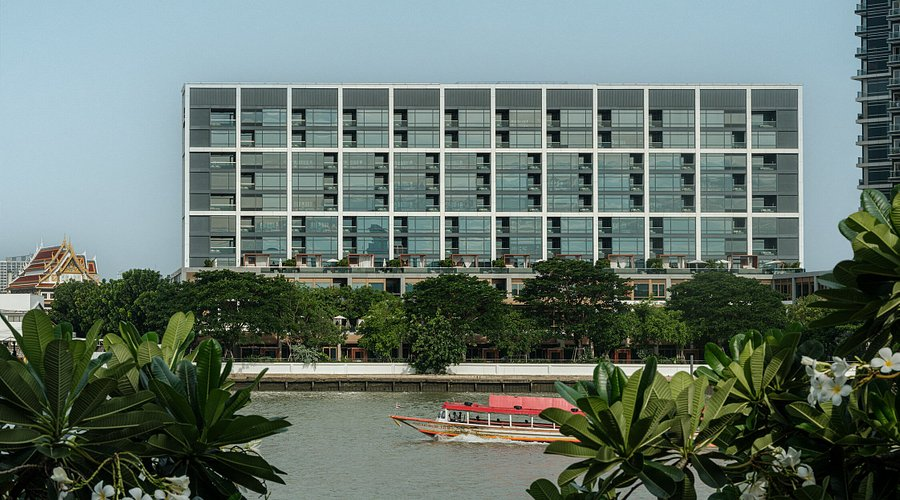
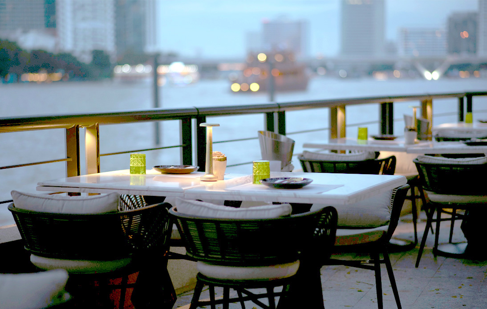
LOCATION Bangkok
ACTIVITIES Your romantic journey begins with a VIP airport service upon arrival at Suvarnabhumi Airport (BKK), ensuring a seamless and swift transfer. A private luxury sedan will whisk you directly to the Capella Bangkok, your opulent riverside sanctuary. Settle into your lavish suite, perhaps enjoying a refreshing dip in the infinity pool overlooking the Chao Phraya River. Indulge in a leisurely afternoon tea, a delightful start to your journey. As evening descends, savor a sophisticated welcome dinner at Phra Nakhon, Capella's exquisite riverside Thai restaurant.
ACCOMMODATION Capella Bangkok

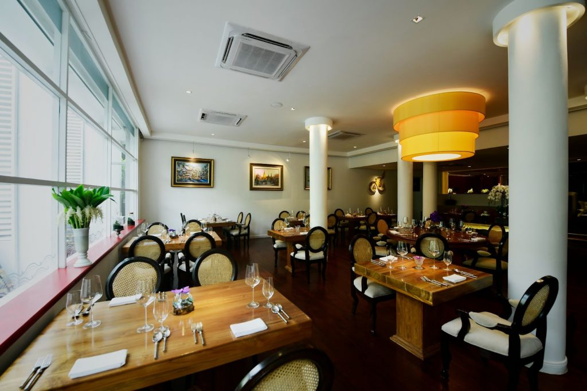
LOCATION Bangkok
ACTIVITIES Commence your day with an exclusive, private dawn visit to Wat Pho, encountering the Reclining Buddha in profound tranquility before public arrival. Accompanied by your expert historian-guide, gain privileged entry to the Grand Palace and Emerald Buddha Temple, delving into the nuanced history of Thai royalty. The afternoon unfolds with a private bespoke long-tail boat excursion along the Chao Phraya River, offering intimate glimpses into authentic riverine life and secluded temples that dot the waterways. Conclude your day with an unparalleled Michelin-starred Thai gastronomic experience at R-HANN, where traditional flavors are elevated through modern culinary artistry in an exquisite setting.
ACCOMMODATION Capella Bangkok
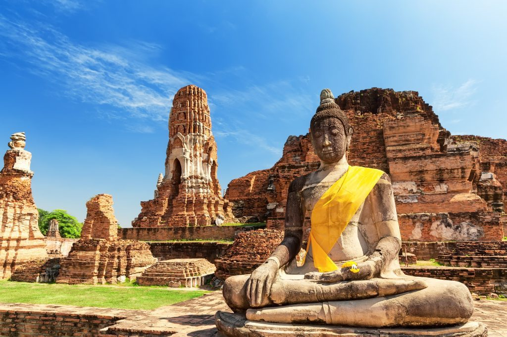
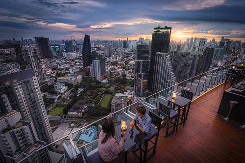
LOCATION Bangkok
ACTIVITIES Embark on a private journey by luxury vehicle to Ayutthaya Historical Park, a UNESCO World Heritage Site. Explore the magnificent ruins of ancient temples and palaces, such as Wat Mahathat and Wat Phra Sri Sanphet, learning about the glorious past of the former Siamese capital. Enjoy a charming lunch at a riverside restaurant overlooking the historical landscape. Consider a private photography session in traditional Thai costumes amidst the ancient ruins, creating timeless romantic souvenirs. Return to Bangkok in the late afternoon. From there, enjoy leisure time to explore Bangkok's vibrant night market scene, indulging in local street food delights, or elevate your evening with a romantic rooftop bar experience at Octave Rooftop Lounge & Bar, offering panoramic city views and bespoke cocktails.
ACCOMMODATION Capella Bangkok

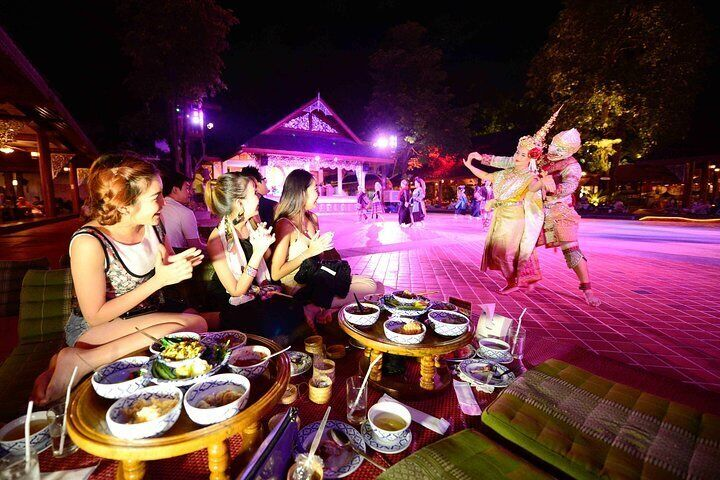
LOCATION Chaing Mai
ACTIVITIES Enjoy a leisurely morning before a private transfer to Bangkok's airport for your premium domestic flight to Chiang Mai. Upon arrival at Chiang Mai International Airport, you'll be privately transferred to Raya Heritage, your serene luxury resort nestled amidst lush landscapes by the Ping River. Settle into your resort's tranquil ambiance, taking time to explore the beautiful grounds, enjoy the river views, or simply relax by the pool in your private haven. As evening sets, savor an intimate Khantoke Dinner at Khum Khantoke, a traditional Northern Thai feast often accompanied by private Lanna cultural performances for a truly romantic and immersive introduction to Chiang Mai's unique heritage.
ACCOMMODATION Raya Heritage
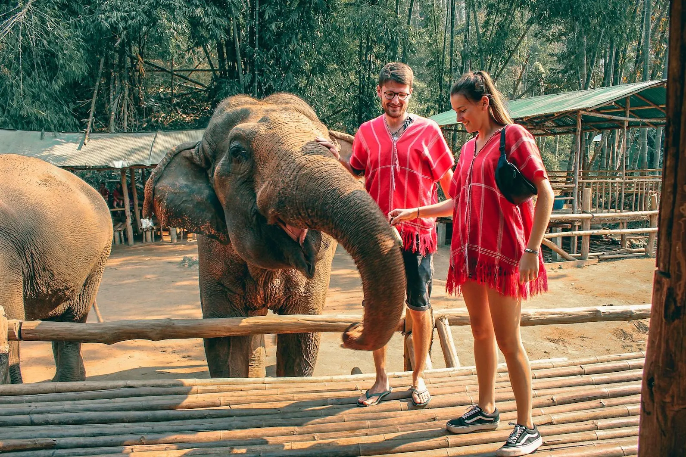

LOCATION Chaing Mai
ACTIVITIES Dedicate your morning to an exclusive, ethical elephant sanctuary, where you'll enjoy a private, unhurried experience interacting respectfully with rescued elephants. Learn about their care, feed them, and observe them in their natural habitat in a responsible and sustainable environment. Visit the revered Wat Phra That Doi Suthep, perched on a mountain overlooking the city. Arrange a private blessing ceremony with monks for spiritual reflection and good fortune for your journey together, a profoundly peaceful experience. Conclude your day by indulging in a private, hands-on Royal Thai cooking class, learning to prepare authentic Northern Thai dishes under the guidance of a local chef. You'll then enjoy your delicious creations for dinner.
ACCOMMODATION Raya Heritage


LOCATION Luang Prabang
ACTIVITIES Explore Chiang Mai's vibrant artisan scene with a private visit to exclusive artisan workshops (e.g., silk weaving, silver craftsmanship, lacquerware), perhaps even trying your hand at a craft to create a unique shared souvenir. Enjoy a private transfer to Chiang Mai International Airport for your luxury flight to Luang Prabang, Laos. Upon arrival, you'll be privately transferred to Amantaka, your tranquil luxury hotel, a former French colonial hospital transformed into an elegant sanctuary. Enjoy a sophisticated dinner at your resort or a charming local restaurant by the Mekong River, savoring the serene atmosphere of Luang Prabang.
ACCOMMODATION Amantaka
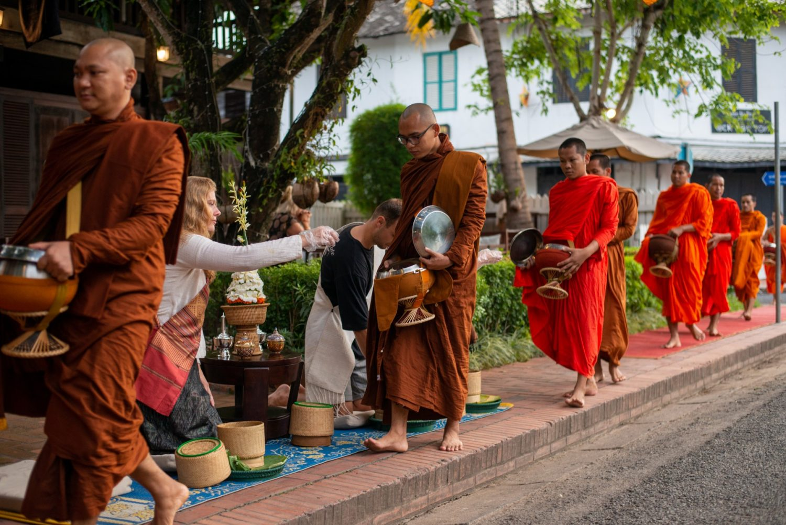

LOCATIONLuang Prabang
ACTIVITIESBefore dawn, participate respectfully in the Alms Giving Ceremony, observing the saffron-robed monks as they collect their daily offerings from locals. A private, respectful setup ensures an intimate and meaningful experience. Return to the hotel for breakfast. Afterwards, explore the Royal Palace Museum, housing artifacts from Laos's royal history, and the exquisite Wat Xieng Thong, considered the most beautiful temple in Luang Prabang, known for its intricate golden facade. Ascend Mount Phousi for panoramic sunset views over the town and the confluence of the Mekong and Nam Khan rivers, a truly romantic vista. Indulge in a private sunset cruise on the Mekong River with cocktails, offering breathtaking views as the sun dips below the horizon, followed by a romantic dinner at a riverside restaurant.
ACCOMMODATION Amantaka
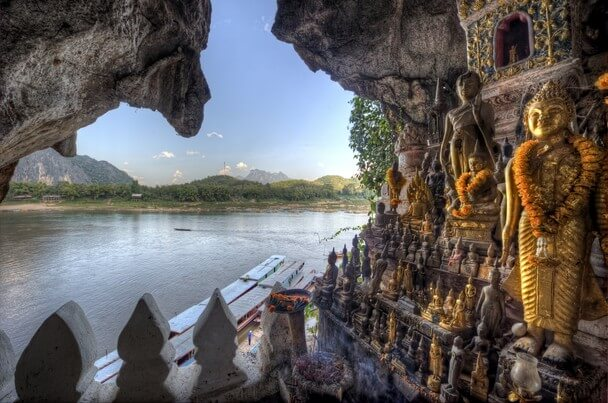
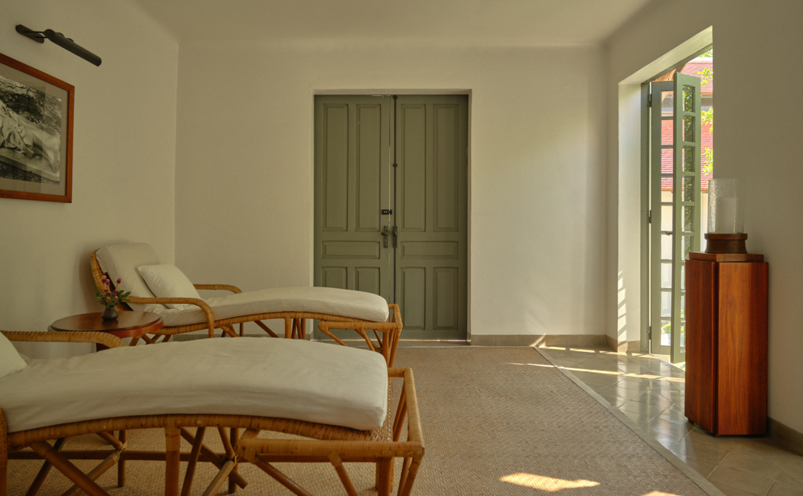
LOCATIONLuang Prabang
ACTIVITIESTake a private, luxurious boat trip along the Mekong River to the sacred Pak Ou Caves, filled with thousands of Buddha images. Stop at local villages along the way, including a "whiskey village" (Ban Xang Hai) to see traditional rice whiskey production and a weaving village (Ban Phanom) to observe traditional textile craftsmanship. Enjoy a couples' Lao traditional massage at your resort or a reputable spa, designed for ultimate relaxation and rejuvenation after your river excursion. At leisure, perhaps a quiet dinner at your resort, enjoying the tranquility of Amantaka, or a romantic stroll through the bustling Night Market, admiring local handicrafts.
ACCOMMODATION Amantaka


LOCATIONHanoi
ACTIVITIES Visit the stunning multi-tiered Kuang Si Falls, where you can swim in the turquoise pools. Take your time to enjoy the natural beauty, perhaps picnicking by the cascades, and visit the adjacent Bear Rescue Centre. Enjoy a private transfer to Luang Prabang International Airport for your luxury flight to Hanoi, Vietnam. Upon arrival at Noi Bai International Airport (HAN), a private luxury transfer will take you to Sofitel Legend Metropole Hanoi, your iconic colonial hotel in the heart of the city. Savor a sophisticated dinner at the hotel's acclaimed French restaurant, Le Beaulieu, a culinary landmark in Hanoi, or explore Hanoi's refined dining scene.
ACCOMMODATION Sofitel Legend Metropole
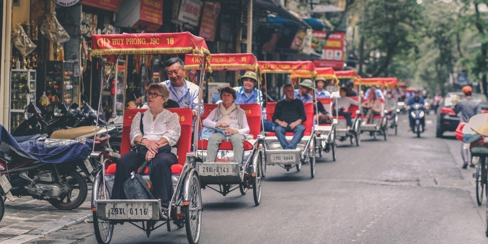
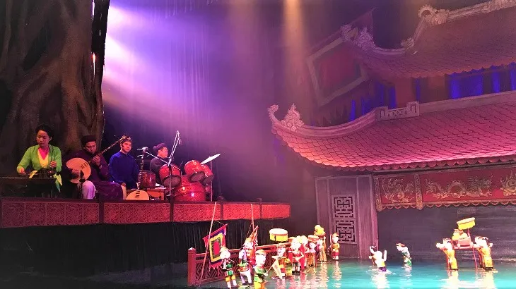
LOCATIONHanoi
ACTIVITIES Begin with a private guided tour of Hanoi's highlights. Enjoy a serene stroll around Hoan Kiem Lake, visiting Ngoc Son Temple, then delve into history at the Temple of Literature, Vietnam's first national university. Explore the charming Old Quarter by private cyclo for two, experiencing its bustling atmosphere. Visit the Ho Chi Minh Mausoleum complex (exterior views) and the elegant One Pillar Pagoda. Optionally, delve deeper into Vietnamese culture at the Ethnology Museum, showcasing Vietnam's diverse ethnic groups. Conclude the day with a private street food tour with a local culinary expert, exploring Hanoi's hidden gastronomic gems and tasting authentic local delicacies, followed by the unique Vietnamese Water Puppet Theatre performance, a traditional art form.
ACCOMMODATION Sofitel Legend Metroplole

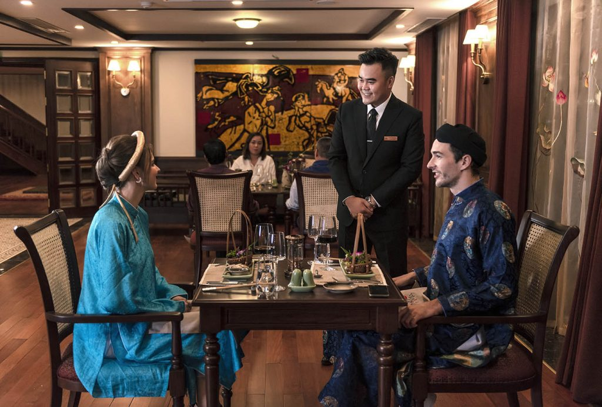
LOCATIONHa Long Bay
ACTIVITIESBegin your day with a private luxury transfer from Hanoi to Halong Bay (approximately 2.5-3 hours drive), a UNESCO World Heritage site and one of Vietnam's most iconic natural wonders. Board the Heritage Binh Chuan Cruise (or an equivalent ultra-luxury overnight cruise with a private balcony suite), setting sail amidst the stunning limestone karsts that rise majestically from the emerald waters. Enjoy exquisite cuisine, engage in activities like kayaking, swimming in secluded coves, or simply relax on deck, marveling at the breathtaking scenery. Experience a magical sunset over the bay with cocktails, followed by a gourmet dinner onboard, creating an incredibly romantic ambiance.
ACCOMMODATION Orchid Premium Cruise
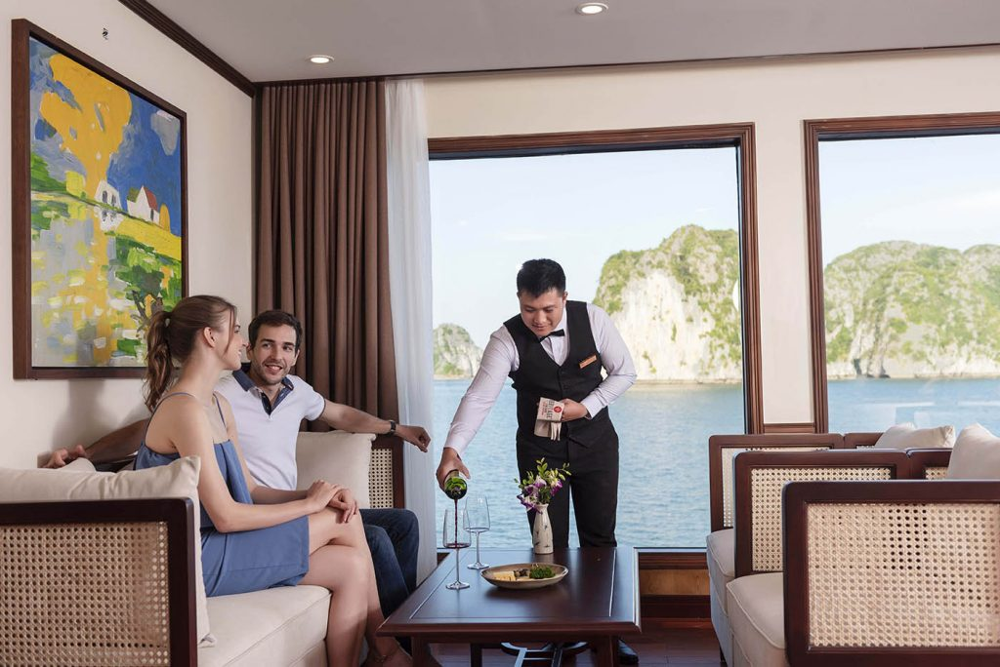
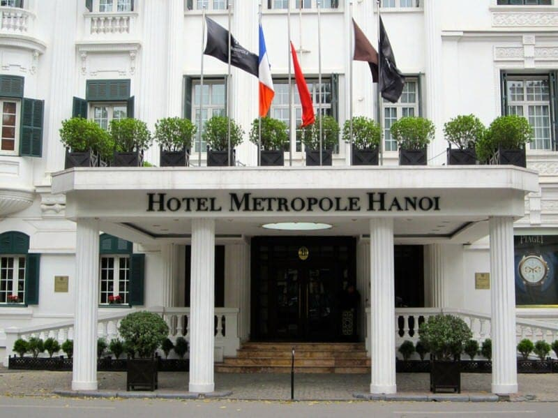
LOCATIONHanoi
ACTIVITIES Wake up to the breathtaking views of Halong Bay, enjoy breakfast onboard, and continue cruising through the emerald waters, exploring more hidden caves or grottoes. Disembark from your cruise and take a private transfer back to Hanoi. Time at leisure for last-minute souvenir shopping in the Old Quarter, or simply relax at the hotel, perhaps enjoying an evening drink in the Metropole's charming Le Club Bar.
ACCOMMODATION Sofitel Legend Metropole Hanoi
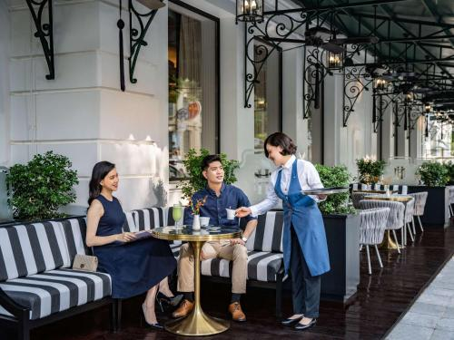
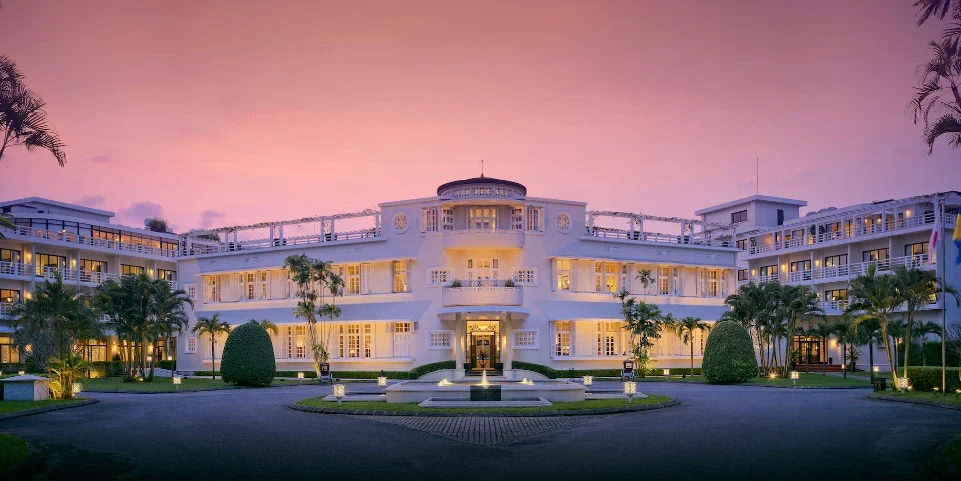
LOCATIONHue
ACTIVITIES : Enjoy a leisurely breakfast. Private transfer to Noi Bai International Airport (HAN) for your luxury domestic flight to Hue. Upon arrival at Phu Bai Airport (HUI), a private transfer will take you to Azerai La Residence Hue, an elegant riverside hotel with colonial charm, overlooking the Perfume River. Settle in and perhaps enjoy the hotel's amenities, preparing for your exploration of Hue's imperial past. You might take a relaxed stroll along the riverfront. Savor a sophisticated dinner at your hotel or a charming restaurant specializing in Hue's distinctive imperial cuisine, renowned for its refined flavors and presentation.
ACCOMMODATION Azerai La Residence Hue
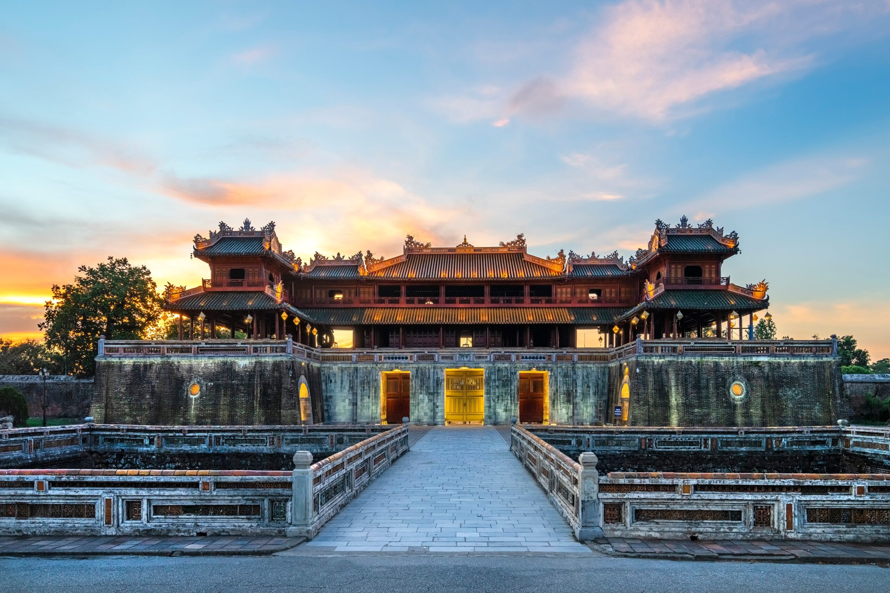
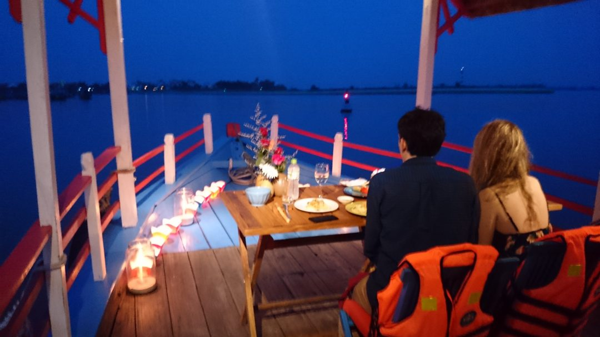
LOCATIONHue
ACTIVITIES Begin with a private guided tour of Hue's magnificent Imperial City, a UNESCO World Heritage Site. Explore the Forbidden Purple City, the Imperial Enclosure, and various temples and pavilions, delving into the Nguyen Dynasty's history. Take a romantic private dragon boat cruise on the Perfume River to visit the tranquil Thien Mu Pagoda, Hue's most iconic pagoda. Then, explore one of the impressive Royal Tombs, such as Minh Mang or Khai Dinh, known for their intricate architecture and beautiful landscapes. Enjoy a private, candlelit dinner aboard your dragon boat on the Perfume River, accompanied by live traditional Vietnamese music, creating an incredibly romantic ambiance as the city lights reflect on the water.
ACCOMMODATION Azerai La Residence Hue
.jpg)
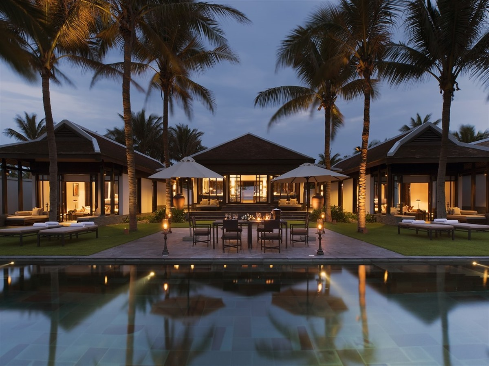
LOCATIONHoi an
ACTIVITIESEmbark on a scenic private drive over the breathtaking Hai Van Pass to Hoi An, offering stunning coastal views and photo opportunities from its vantage points. Check into Four Seasons Resort The Nam Hai, your charming riverside and beachfront resort in Hoi An. Take a leisurely stroll through the Hoi An Ancient Town, a UNESCO World Heritage site, admiring its well-preserved architecture, colorful lanterns, and charming streets. Enjoy a romantic dinner at a riverside restaurant in Hoi An, soaking in the magical atmosphere of the lantern-lit town at night.
ACCOMMODATION Four Seasons The Nam Hai
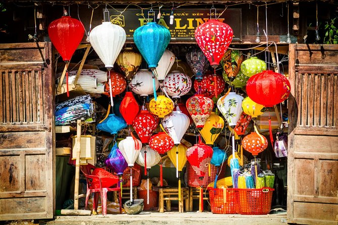
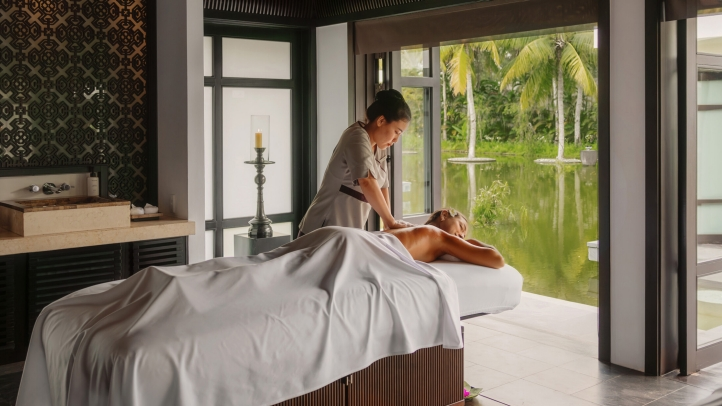
LOCATIONHoi An
ACTIVITIESEngage in a private lantern-making workshop for couples, creating your own illuminated keepsake to remember your time in Hoi An. Explore Hoi An's famous bespoke tailoring scene with a visit to a renowned tailor for custom-made outfits, taking advantage of the town's skilled artisans. Enjoy leisure time, perhaps relaxing by the resort's stunning beachfront pool, or indulging in a luxurious couple's spa treatment at The Heart of the Earth Spa at Four Seasons. Experience a truly romantic sunset boat trip on the Thu Bon River, with floating lanterns and cocktails, offering picturesque views as the sun sets over the water, followed by dinner at a highly-rated local restaurant.
ACCOMMODATION Four Seasons The Nam Hai
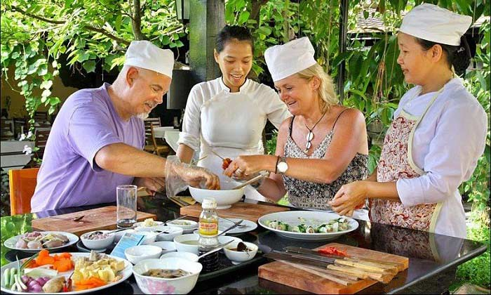
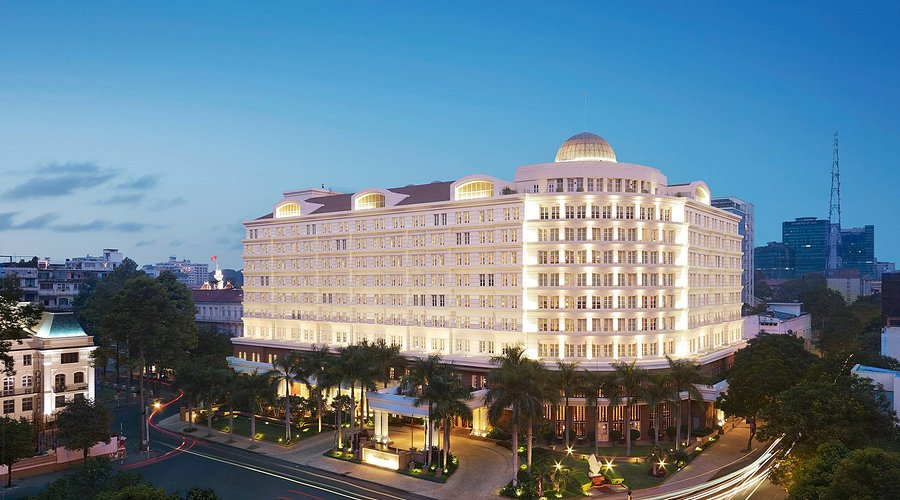
LOCATIONHo Chi Minh
ACTIVITIESImmerse yourselves in Vietnamese cuisine with a private cooking class, starting with a guided market visit to select fresh ingredients. Enjoy your delicious creations for lunch. Private transfer to Da Nang Airport for your luxury domestic flight to Ho Chi Minh City (HCMC). Upon arrival, a private transfer will take you to Park Hyatt Saigon, your sophisticated city hotel located in the heart of the bustling metropolis. Savor a sophisticated dinner at your hotel's acclaimed restaurant, such as Square One at Park Hyatt Saigon, known for its Vietnamese and Western cuisine, or explore HCMC's vibrant fine dining scene.
ACCOMMODATION Park Hyatt Saigon
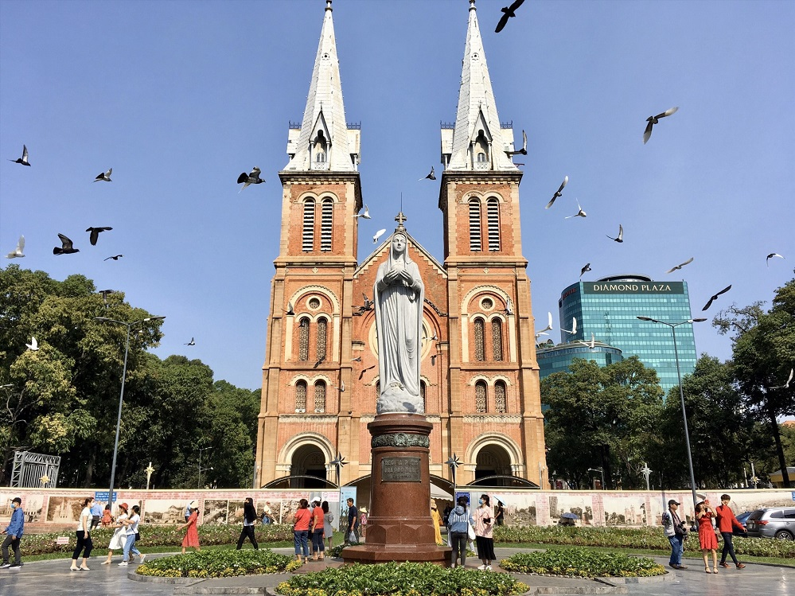
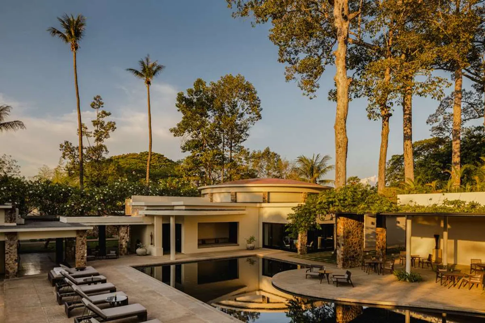
LOCATIONSiem Reap
ACTIVITIES Enjoy a private guided tour of HCMC's key landmarks, including the historic Reunification Palace, the beautiful French colonial architecture of Notre Dame Cathedral (exterior) and the Central Post Office, and a visit to the poignant War Remnants Museum for a deeper understanding of Vietnam's past. Private transfer to Tan Son Nhat International Airport (SGN) for your luxury flight to Siem Reap, Cambodia. Upon arrival at Siem Reap International Airport (REP), a private luxury transfer will whisk you to Amansara, your serene and exclusive luxury retreat near the temples of Angkor. Enjoy a sophisticated dinner at your resort or a top local restaurant, preparing for the wonders of Angkor that await you.
ACCOMMODATION Amansara
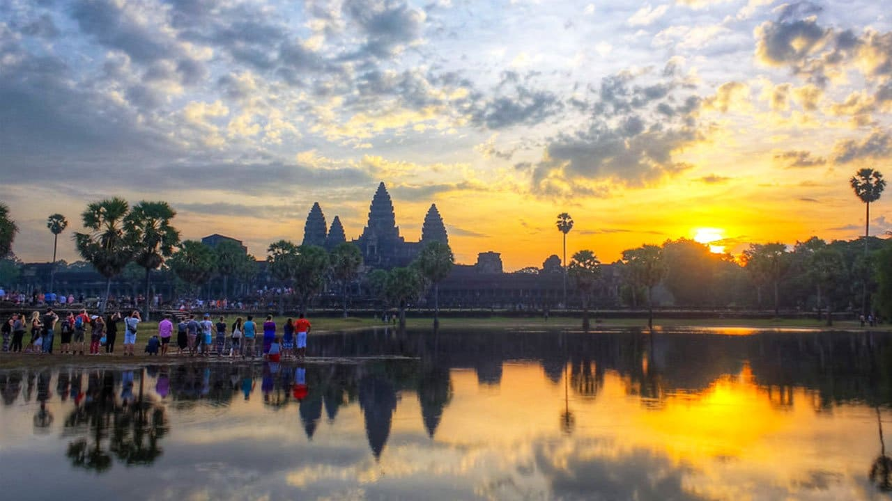
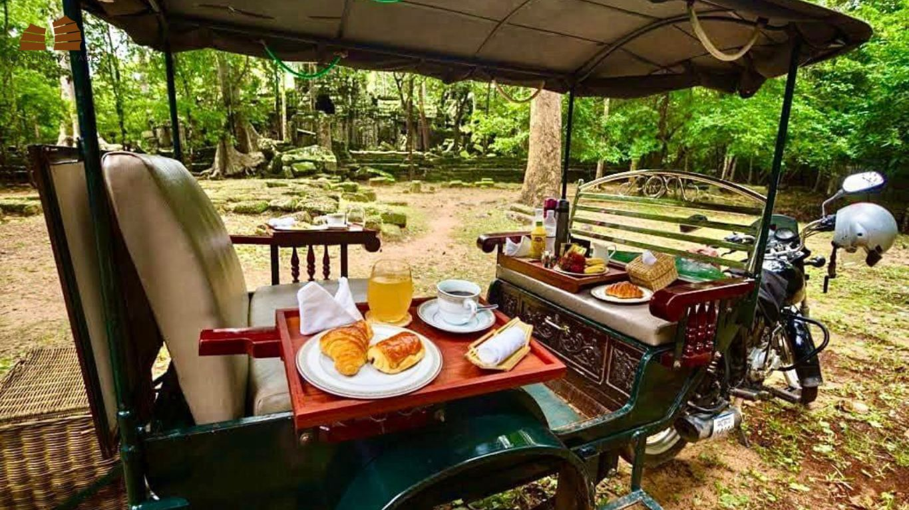
LOCATIONSiem Reap
ACTIVITIES Pre-dawn departure for an unforgettable private sunrise experience at Angkor Wat, with a strategic viewing spot chosen to avoid crowds. Enjoy a gourmet picnic breakfast arranged by your hotel near the temple, savoring the tranquility. Explore Angkor Thom (including Bayon Temple with its smiling faces, the Terrace of the Elephants, and the Terrace of the Leper King) and the atmospheric Ta Prohm (Tomb Raider Temple), famously enveloped by giant tree roots. Your private, expert guide will lead you through less-crowded pathways. Return to the hotel for leisure by the pool or another rejuvenating spa treatment at Amansara's renowned spa. Conclude your day with a private candlelit dinner by the temple-inspired grounds of your resort, offering an intimate and magical ambiance.
ACCOMMODATION Amansara
.jpg)
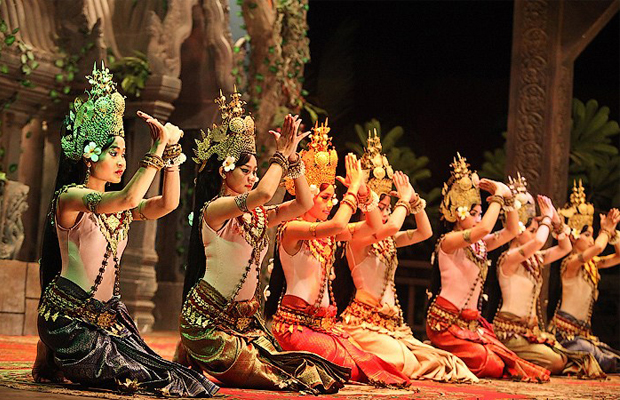
LOCATIONSiem Reap
ACTIVITIES Private excursion to Banteay Srei Temple, known for its incredibly intricate pink sandstone carvings, often considered the jewel of Khmer art. Explore this exquisite "Citadel of Women" in detail. Visit Artisans Angkor to witness traditional Khmer crafts being made, such as stone carving, wood carving, and silk painting, and perhaps select a unique, handcrafted souvenir. Indulge in a fine dining experience, possibly with a private Apsara Dance performance in an intimate setting, celebrating Cambodia's rich cultural heritage through its classical dance.
ACCOMMODATION Amansara
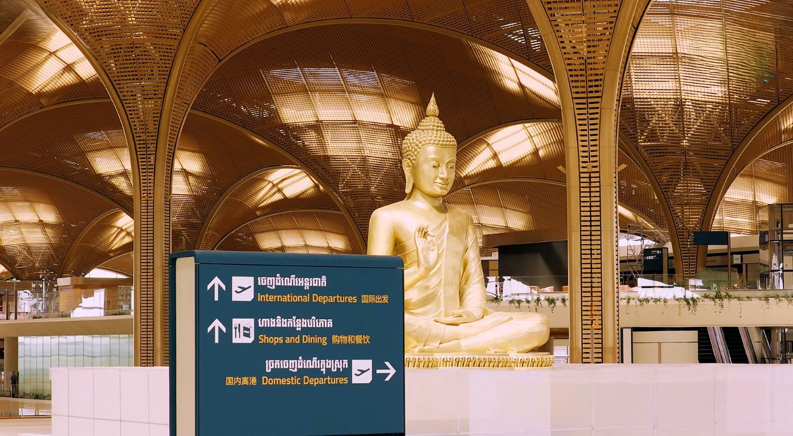
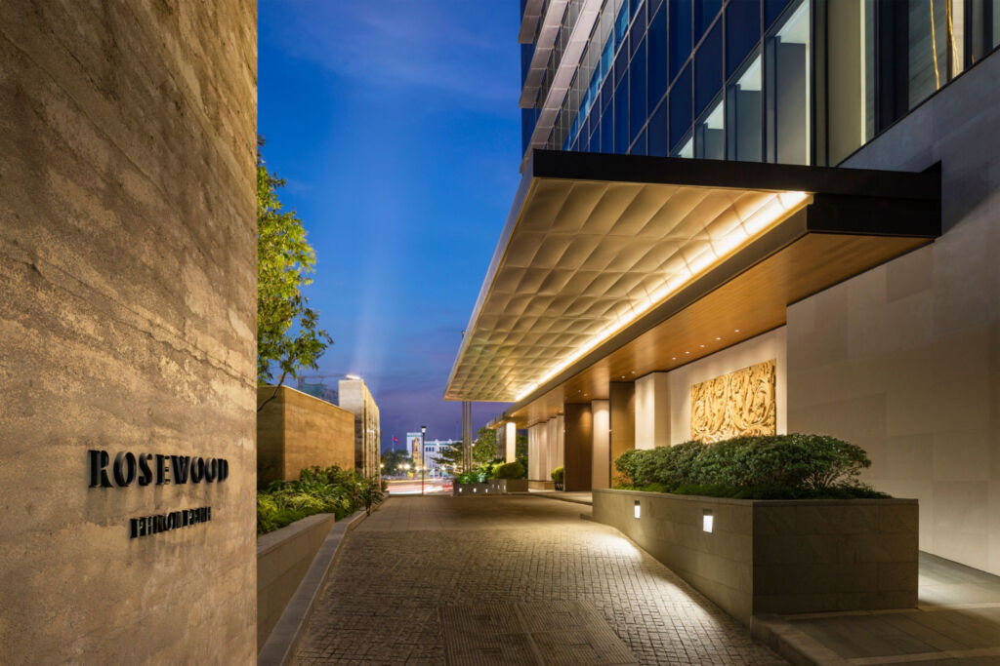
LOCATIONPhnom Penh
ACTIVITIES Enjoy a leisurely breakfast at your resort. Private transfer to Siem Reap Angkor International Airport (SAI) for your luxury domestic flight to Phnom Penh, Cambodia's vibrant capital. Upon arrival at Techo International Airport (KTI), a private luxury transfer will take you to Rosewood Phnom Penh, your elegant riverside hotel offering stunning views of the city and the Mekong River. Settle in and enjoy some leisure time, perhaps by the hotel's infinity pool. Savor a sophisticated dinner at your hotel's acclaimed restaurant, like Brasserie Louis at Rosewood Phnom Penh, or enjoy a romantic meal at a fine dining restaurant in the city.
ACCOMMODATION Rosewood Phnom Penh
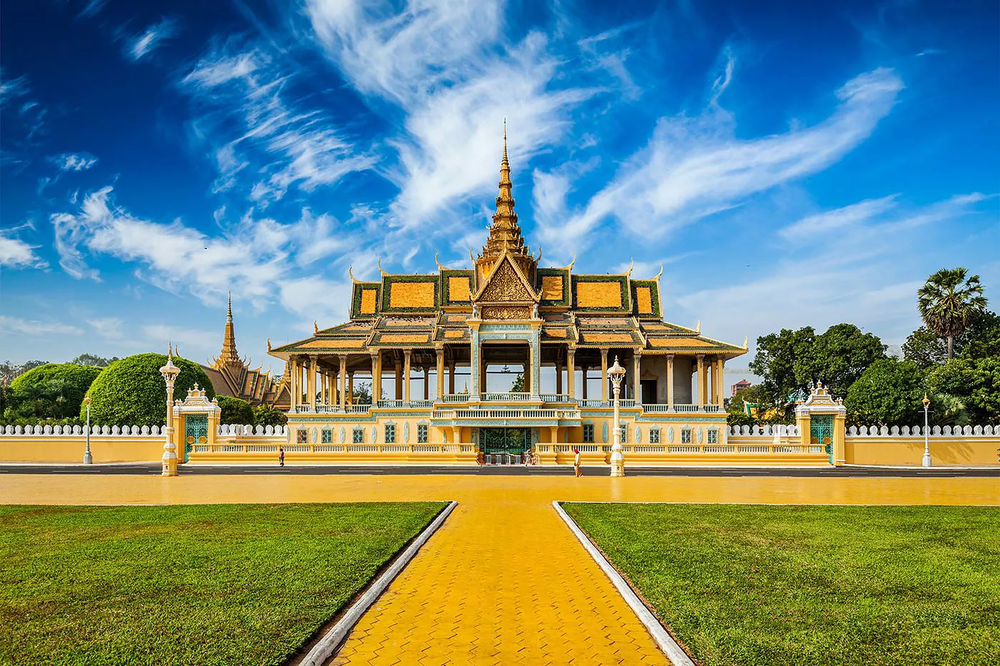
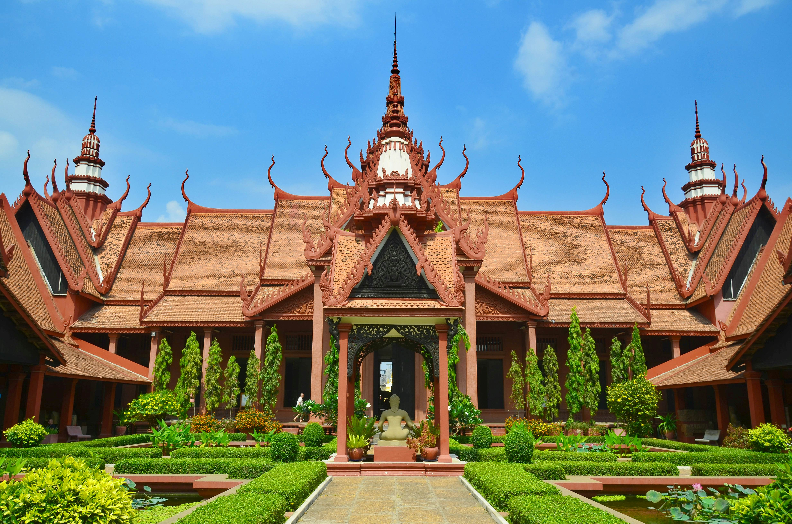
LOCATIONPhnom Penh
ACTIVITIESToday, embark on a private guided tour to discover the grandeur of Phnom Penh. Begin with a visit to the Royal Palace, a stunning example of Khmer architecture, home to the Royal Family, and explore its beautiful grounds. Adjacent to the Palace, step into the revered Silver Pagoda, named for its floor made of 5,000 silver tiles, and admire its impressive collection of Buddha statues. Continue to the National Museum, which houses an outstanding collection of Khmer art, including archaeological and religious artifacts from various periods, providing rich context to Cambodia's history. In the afternoon, visit Wat Phnom, a significant Buddhist temple situated on a small hill, which gives the city its name and offers panoramic views. For dinner, enjoy refined Khmer cuisine and a delightful ambiance at Malis Cambodian Restaurant, known for its "Living Cambodian Cuisine" concept.
ACCOMMODATION Rosewood Phnom penh
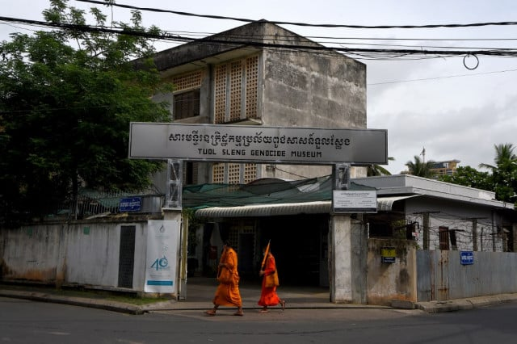

LOCATIONPhnom Penh
ACTIVITIES This morning offers a profound and essential, though somber, understanding of Cambodia's recent history. With your private guide, visit the Tuol Sleng Genocide Museum (S-21 Prison), a former high school tragically converted into a security prison during the Khmer Rouge regime, followed by a visit to the Choeung Ek Genocidal Center (Killing Fields). These sites offer a powerful and crucial historical context to Cambodia's resilience and are optional based on your comfort level. After these reflective visits, enjoy a quiet lunch. In the afternoon, immerse yourself in local culture with a private excursion to Koh Dach (Silk Island). A short ferry ride brings you to this serene island where you can observe traditional silk weaving practices and local village life. Alternatively, enjoy a relaxing sunset cruise on the Mekong River, offering a beautiful perspective of Phnom Penh's riverside landmarks as dusk settles. For your farewell dinner in Cambodia, experience the modern, art-inspired atmosphere and delicious cuisine at ROMDENG, a vocational training restaurant offering high-quality Cambodian dishes while supporting a good cause.
ACCOMMODATION Rosewood Phnom Penh
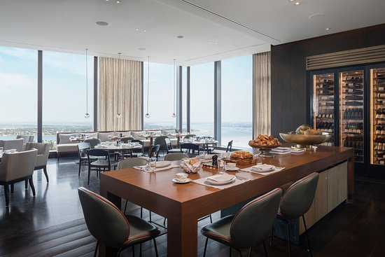
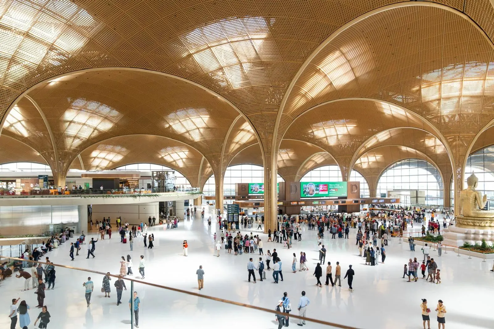
LOCATIONPhnom Penh
ACTIVITIES Enjoy a leisurely breakfast and spend your morning relaxing at the hotel, perhaps enjoying a final spa treatment, or exploring a local market for last-minute souvenirs, such as traditional Cambodian silks or carvings. Private luxury transfer to Techo International Airport (KTI) for your onward international departure, carrying cherished memories of your Grand Indochina Romance.
ACCOMMODATION N/A (Departure)